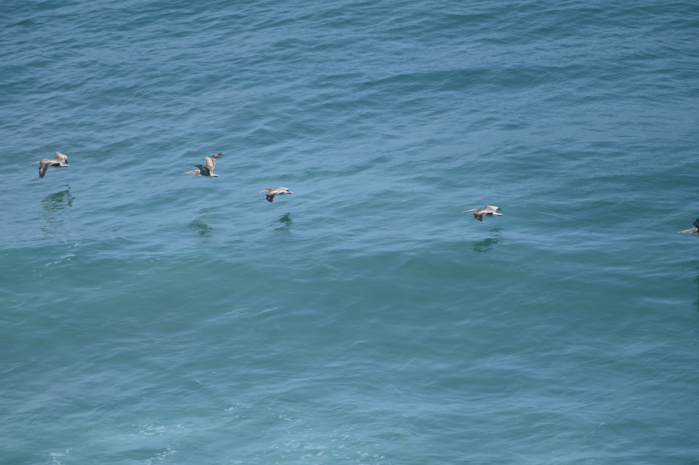
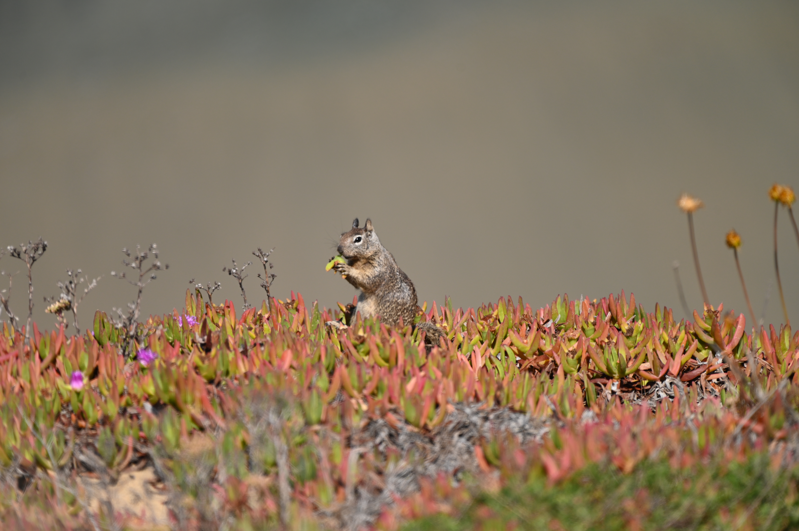
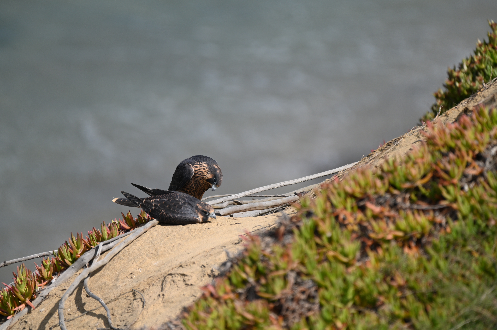
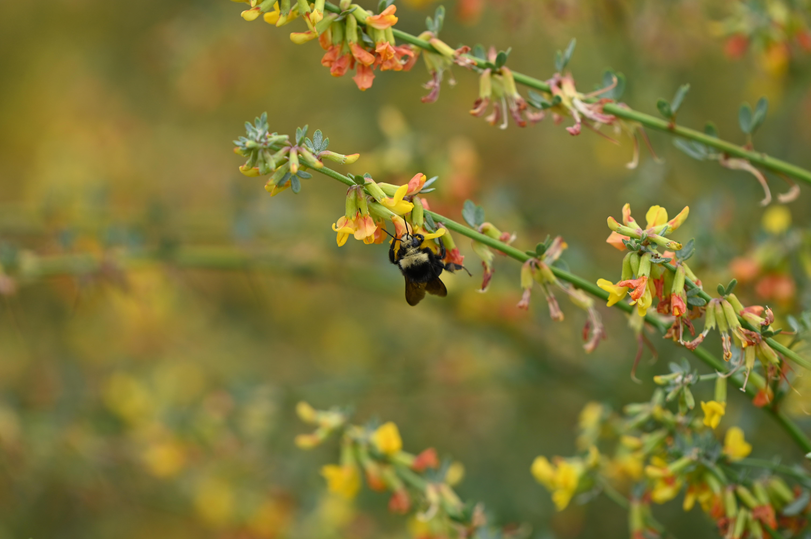

Wildlife of San Diego
Estuaries
Osprey

Description
Ospreys are a type of predatory raptor that primarily hunts fish. They are closely related to hawks, eagles, kites, and vultures. They hunt by diving fully into the water to catch fish, a behavior unique to them among other raptors due to their fully waterproof feathers. You can identify them near bodies of water in San Diego by the distinctive white feathers on their bodies and the dark feathers on their wings and mask. They are one of the most widespread raptors in the world found on every continent other than Antartica
Habitat
Ospreys can be found in San Diego in close proximity to both salt and fresh water. They nest in nearby trees, rocky outcrops, and artificial strucutres like telephone poles. Osprey nests can weigh hundreds of ponds can weigh hundreds of pounds and are composed of primarily branches and assorted vegetation.
Conservation
Ospreys were threatened in the 1900's primarily by hunting and pesticides like DDT but their population has mostly recovered since then. In the modern day ther main threat is habitat loss from the destruction of wetlands like mangroves and estuaries sicne they rely on them primarily for nesting and food
Description
The Anna's Hummingbird is one of the most abundant hummingbirds in the western United States. They can be idnetified by their large size compared to other hummingbirds and the distinctive red scale feathers males display and the darker green and gray feathers femlaes have compared to other hummingbirds. They feed off nectar and insects and can commonly be seen in gardens.
Habitat
Anna's Hummingbirds can be found in most habitats, from chapparel to forests, to mountain to deserts and are not a unique species to the coastal wetlands. Anna's hummingbirds are a commonly seen speicies in neighborhoods due to the number of flowers often found in personal gardens, and often make small nests composed of small plant detritus in tree branches often in low-hanging ones
Conservation
While Anna's hummingbirds have not experienced any sort of notable decline due to personal gardens mainting an ideal habitat for them, the nests they make are fragile and if found in low-hanging branches should not be touched or too closely observed to avoid destroying them or putting undue stress on the parents and chicks
Anna's Hummingbird

American White Pelican

Description
The American White Pelican is one of of our two pelicans found in both San Diego and the US as a whole, the other being the Brown Pelican. Brown Pelican is more commonly found in San Diego, while American White Pelican is harder to find. The pelican photo here was taken in San Elijo estuary during the morning. The American White Pelican doesn't hunt at sea and in San Diego, it prefer to hunt during the morning and if succesful moves further back inland to settle in during the day, making the morning the ideal time to try to photograph them
Habitat
The American White pelican usally hunts fish within secluded bays, eastuaries, and rivers during the mronings and sometimes the afternoon. They build loose nests out fo rocks, sticks, and whatever else is available in depressions on river banks and sand bars. They nest mainly around some of San Diego's lakes, you can see them there with the ducks and coots sometimes.
Conservation
The American White Pelican is relatively secure though they faced a larger decline in population in San Diego and are still recovering. Within San Diego they mainly face threats from loss of wetland habitat where they hunt.
Description
The Southern Pacific Rattlesnake is one San Diego's mlst interesting local snakes. While they are relatively common throughout the county, they massively differ in hunting strategy and looks depending where they are found. They actively change color depdending on mood and habitat. Within San Diego, while the coastal variations tend to be just brown like in the picture, you can find ones among large fields that take on a minty green color and several populations within the mountains are a stark black, among many other color variations. Different populations carry entirely different types of venom, one prevents bloodcotting and attakcs the muscle tissue and the other attacks neurons. They usually make for farily calm photography subjects though they do get scared easily and run off. If ones is angry though, you can easily tell by the rattling so give it some space and you'll be fine.
Habitat
The Southern Pacific rattlesnake is found throughout the county, though the one pictured was found in an estuary. They tend to hunt western fence lizards while juveniles, our most common lizard in the county, you'll see it eveywhere on rocks and side walks. When they grow up though they usually hunt mice, rats, rabbits, and ground squirrels. The one in eastuary was most likely huntign grond squirrels and possibly some of the birds that call the estuary home. They tend to be a common backyard critter too during summer and spring.
Conservation
The primary threats the Southern Pacific Rattlesnake faces are killing and habitat loss. Within San Diego, while this has improved in recent years, for a long while people would jsut decapitate them with shovels whenever they were found in backyards instead of relocating them, as they were viewed as threats towards pets and children. The development of coastal chapparel and grassland in San Diego has also greatly reduced their hunting grounds and homes. Calling wildife and snake relocation programs when they are found on property with children and dogs along with undergoing snake training for dogs is an easy and humane way to mitigate the threat of them. Many of these services are done for free by volunteers and are a worthwhile way to protect this amazing local species.
Southern Pacific Rattlesnake

Coasts
Brown Pelican

Description
The Brown Pelican can be commonly found in San Diego just by walking along the beach and cliffs. You often see them flying in a v formation or single file lines over the sea. They are the smallest pelican alive today and primarily hunt fish in open water by diving. You'll see big flocks of them alongside seabirds congregate out on the ocean when big bait balls of fish form, something to keep an eye out for while at the beach.
Habitat
They nest primarily on cliffsides, where they make somewhat loose nests out of branches and other detritus. They aren't particularly fearful of humans in San Diego, so a lot of their big nests are built right next to places that see very regular foot traffic, making them somewhat of a local tourist attraction
Conservation
Climate change has affected many seabirds including the Brown Pelican very negatively, with local fish populations like Sardines collapsing under both overfishing and climate change. The seabirds like the brown Pelican that rely on these fishiries are very susceptile to this loss of food. As of now they are considereed endangered within the Pacific coast region
Description
The California Ground Squirrel is a commonly found critter throughout San Diego. They are key prey item for the local predatory birds, snakes, and mammals. Unlike most squirrels they are found in the ground rather in trees, giving them their name.
Habitat
Ground squirrels live in burrows they dig in loose soil. These burrows are often placed near hard objects, like trees, rocks, and often concrete to provide additional protection and structure to their burrows. They eat a wide range of plants but usually their burrows to do so, without pulling plants underneath like gphers do.
Conservation
Ground squirrels are doing well and are considered least concern when it comes to endangerment, but they are considered somewhat of a pest species and efforst to cull their population locally do threaten the many predators that rely on them
California Ground Squirrel

Peregrine Falcon

Description
The Peregrine Falcon is the fastest bird in the world while diving, reaching speeds of close to 250 mph. They can be recognized the black and brown markings on their face or if a bird randomly explodes right in front of you. They are several famous nesting pairs in San Diego that return to the smae nesting sites year after year with one of them even being showcased on the North America documentary series from the Discovery channel.
Habitat
peregrine falcons can be found throughout the county nesting in the worn away parts of sandstone cliffs and building alcoves, taking advantage of the similarity of their natural habitat within cities. They guard these ferociously while they raise their young and I've even personally seen one flip a pelican over and drive it into the sea to keep it away. They are primarily bird specialists divie bombing them from high above to catch them off guard. The sheer number of pigeons within cities has contributed to their success in integrating to urban life.
Conservation
Peregrines have adapted incredibly well to human prescence, and in the current day are doing quite well now that harmful pesticides like DDT are no longer in use. The decline of other bird populations and attempts to remove pigeons as pest animals are a threat to Peregrine population but as long as those remain relatively stable, peregrines should remain unthreatened.
Description
The Yellow Faced Bumblebee is a native bee to the Pacific Coast. It's a local pollinator and while less common than the Honey Bee due to the smaller colony size, you can see them pretty often at local flower blooms. They are easily recognizable by their furry yellow and black body, though they are not San Diego's only bumblebee species, so closer identification is required to distinguish the species.
Habitat
They nest underground in small colonies and dig their nests out themselves in loose dirt. Many bee species local to San Diego dig burrrows, so small holes you find in gardens may belong to one of these bee species. These burrow entrances are recognizable by their size, around the width of the tip of a pink finger.
Conservation
The biggest threat is the loss of habitat due to urbanization. While food sources thanks to local gardens remain abundant, houses, asphalt and pavement remove viable nesting soil. While many bumblebee species are declin9ng and/opr endagnered, the yellow-faced bumblebee so far is not thankfully
Yellow Faced Bumblebee

Regional Conservation
San Diego is a very urbanized zone with quite a few introduced invasive plants like the Eucalyptus and Brazilian Pepper Tree. Invasive species of beetles have been destorying the critically endangered Torrey Pine groves in San Diego, which are among the last in the world alogside the ones on the Channel islands off the coast of California. Clinate change has also been devastating our local kelp forest and other marine ecosystems, resutling in massive loss to kelpo forests and more potent algae blloms with suffocate fish
There are a number of theings you can do in San Diego to help conservationally. Calling wildife relocation services for snakes are suggested since they do face a siginificant risk of being killed by someone when located within urban zones. Abide by no walk zones on trails when they are in the middle of wildlife restoration. And they are oppurtunities to get involved with native plant restoration on wildlife reserves and you can always donate.